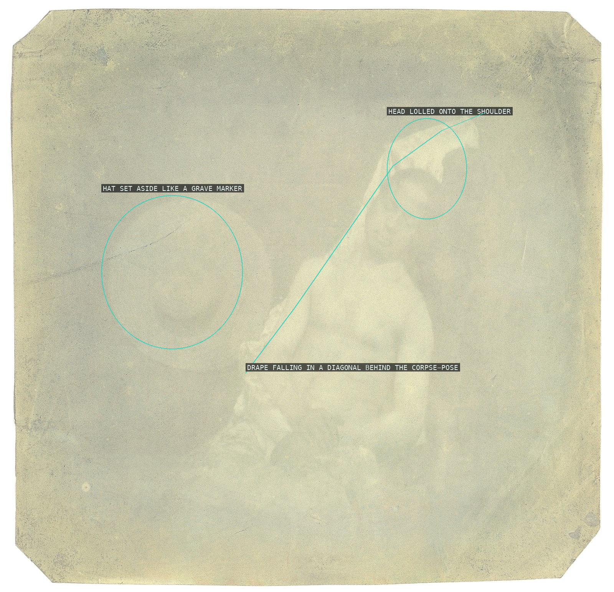
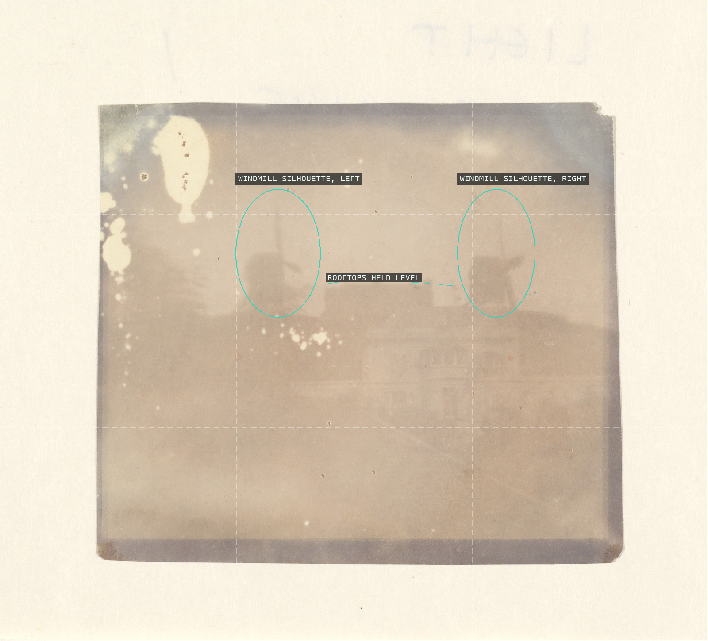
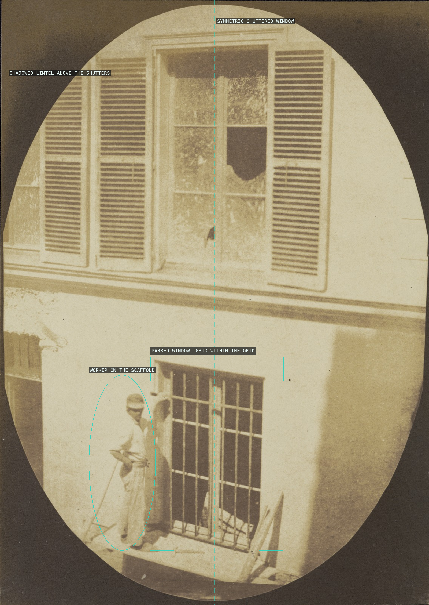
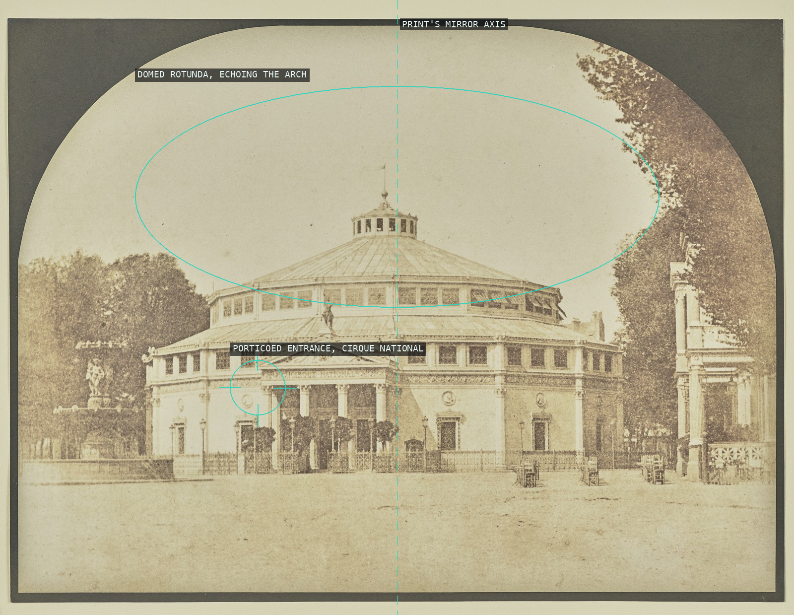
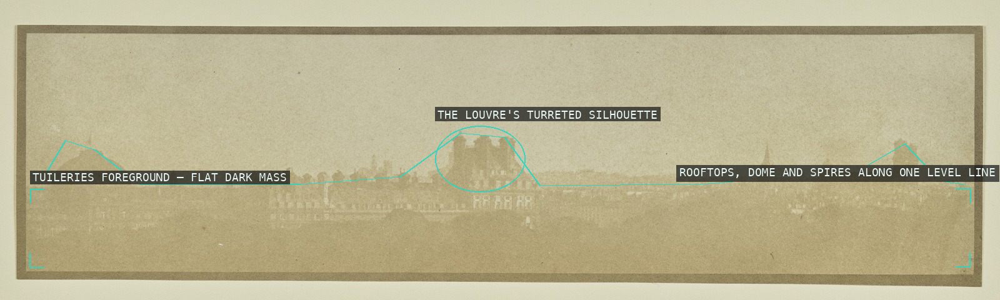
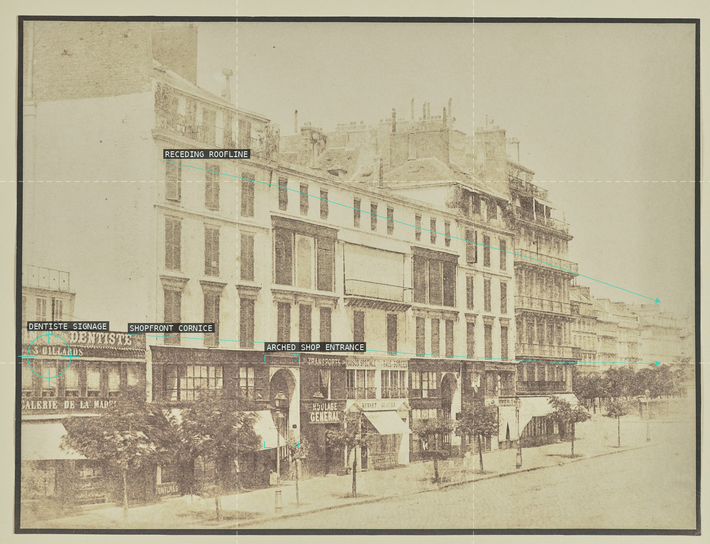
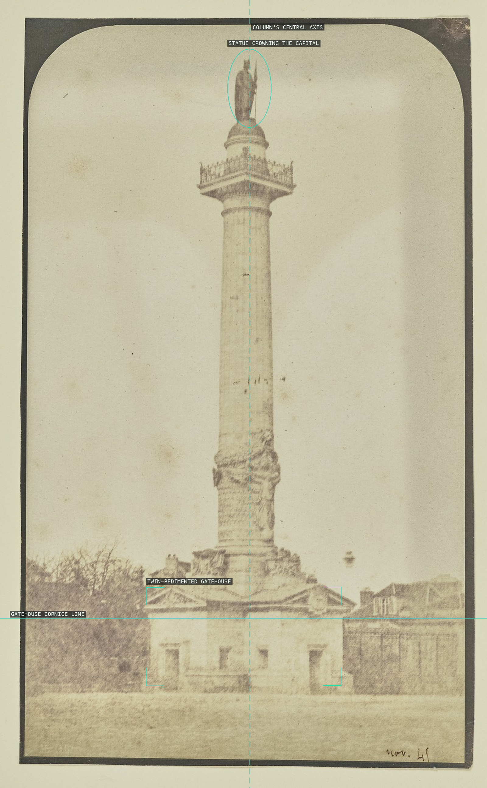

A staged corpse: the head lolled dead against the shoulder and a hat set aside like a grave marker read as documentary fact because the flat, frontal lighting gives the fiction no seams.

Two windmill silhouettes bracket a level rooftop line, banding the built town dark beneath a vast pale sky -- the tonal recession that gives this direct positive its ghostly stillness.

A parted curtain turns a shelf of plaster casts into a proscenium, with Venus de Milo held dead-center on the bilateral axis like a formal portrait sitter.

Bayard braces on a barrel placed on the right-hand third while a ladder's diagonal cuts across the trellis's rigid lattice, his figure reading in silhouette against its grid.

A symmetrical shuttered window and its own shadowed lintel impose a formal grid on the upper register, while the barred window and the off-axis worker below puncture that order with documentary asymmetry.

Bayard sets the circus rotunda's domed drum on the same vertical axis as the print's own arched mount, so the round architecture and the round vignette share one radial symmetry.

Depth is built by tonal recession alone -- a level line of rooftops, dome and turrets barely breaking it, floating in flat gray air above a dark, detail-less foreground, with no converging lines to construct perspective.

The roofline and shopfront cornice rake back in tandem toward a shared vanishing point, flattening the row's repeating bays and painted signage into one raking street elevation.

The column plants itself dead-center on the frame's vertical axis, its statue-topped capital nearly touching the top edge, while the symmetric twin-pedimented gatehouse at its foot echoes the same mirror symmetry at ground level.

Shot dead-on, the fountain's niche, seated bishop and flanking columns lock into strict mirror symmetry, with the shallow foreground water laying a soft horizontal band beneath the vertical architecture.